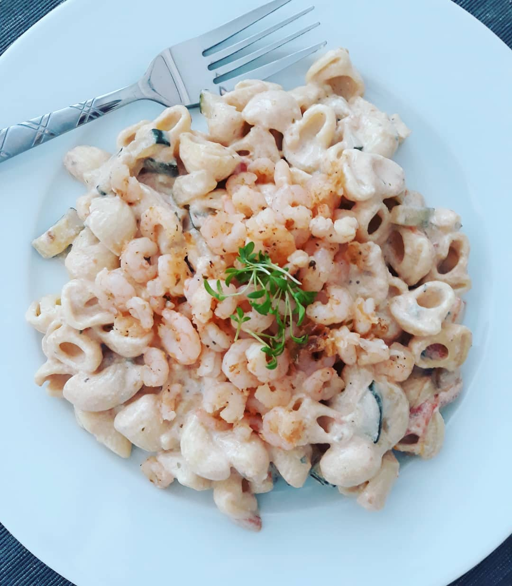

Žerucha podľa @poppycinnamonlady — Normy Jedál
Cestoviny s nivovou omáčkou, cuketou, cherry paradajkami a opečenými krevetami.🍤🥒🍅🧀🍝🤤👌
#pasta #niva #shrimps #cherrytomatoes #zucchini #oliveoil #oregano #kolienka #nivovaomacka #cuketa #cherryparadajky #krevety #zerucha #yumy #delicious #healthy #healthyfood #blog #blogger #foodblog #foodblogger #cooking #baking #recipes #recepty #poppyandcinnamonlady #kitchenistheheartofthehouse #bonappetit